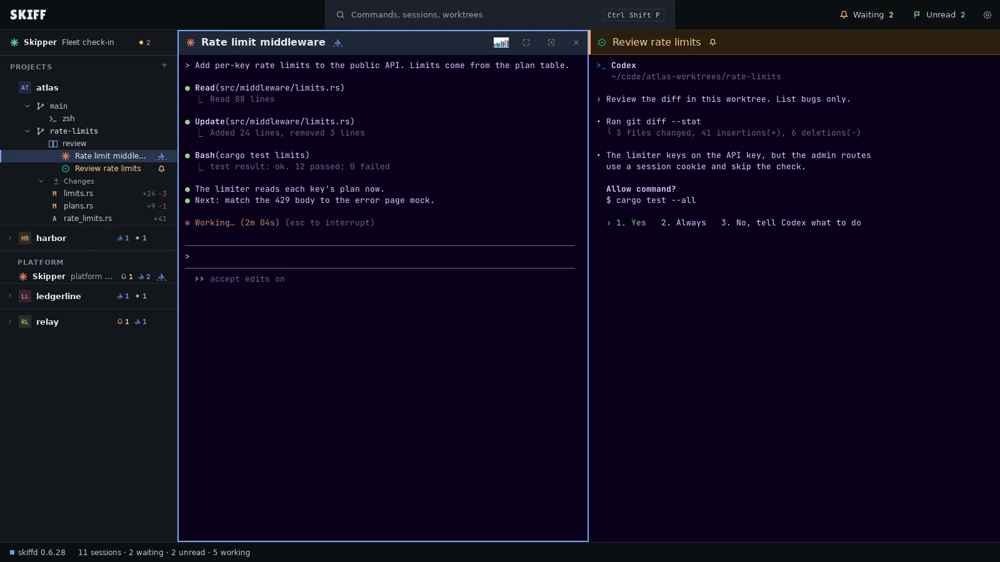

Skiff
SkiffSessions side by side
Put up to four sessions in a named group and split them left, right, up or down.
Claude Code runs in a terminal. Skiff is a desktop app for Linux and macOS that holds many of those terminals. Each session sits under the project and Git worktree it works in, and you can see which one needs you.

v1.7.1Claude Code and Codex in one group. The bell shows the session that waits for approval.
Skiff starts the claude command you already have. It adds one flag to the start line so that Claude Code can read the images you drop or paste on its pane. Claude Code itself does not change.
Put up to four sessions in a named group and split them left, right, up or down.
Make Git worktrees in Skiff and start a Claude Code session in each one, so parallel tasks don't edit the same files. See the worktree guide.
A bell means a session waits for your approval. A flag means it finished its turn while you were in another pane.
A daemon, skiffd, owns every terminal. Claude keeps going after you close Skiff. Open it again and each terminal shows its last screen.
Each worktree lists the files Claude changed. Select one to see the diff. Double-click it to open the file in your own editor.
The skiff command lets Claude Code start more sessions, type into them and wait for them to finish.
Skiff installs no hooks and writes nothing into Claude Code's configuration. It runs the CLI you signed in to, with your own plan or API key. You can start Codex, Gemini, Grok, OpenCode, Hermes or a plain shell next to it.
.deb, .rpm or AppImage) or macOS on Apple Silicon.claude session. Add more sessions to the group as the work grows.You don't type skiff commands yourself. Ask your agent in plain words, from any Skiff terminal:
Open a Codex next to me and ask it to review the uncommitted changes. Tell me what it finds.
The agent runs the commands, waits for the other session and reports back. It learns how from the skiff-cli skill. Copy it once into your agent's skills folder, such as ~/.claude/skills/ for Claude Code or ~/.codex/skills/ for Codex. The app does not install it for you.
skiff new --agent codex --name review --group . skiff wait review --for idle skiff send review "Review the diff in this worktree" --enter skiff wait review --for idle skiff peek review
In a Skiff pane, a wait stops after 45 seconds. On a timeout, the agent reads the screen and waits again. The full list is on the CLI page.
claude command you run in a terminal, so it uses whatever login that command already has.